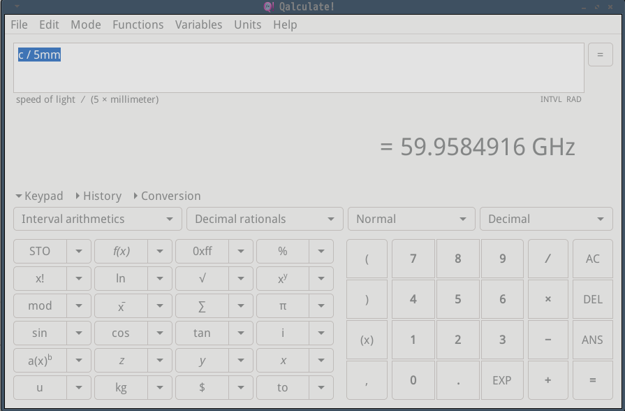
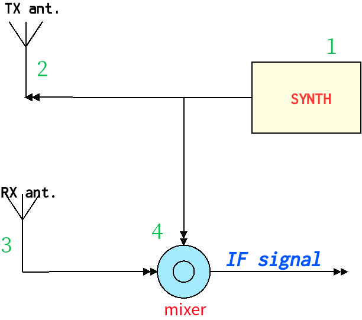
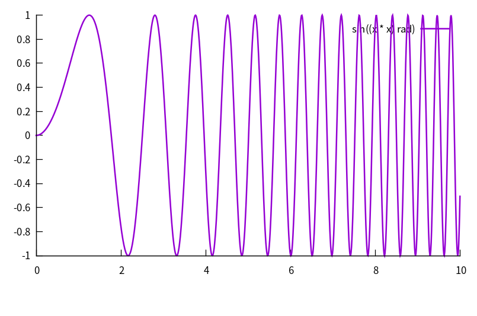
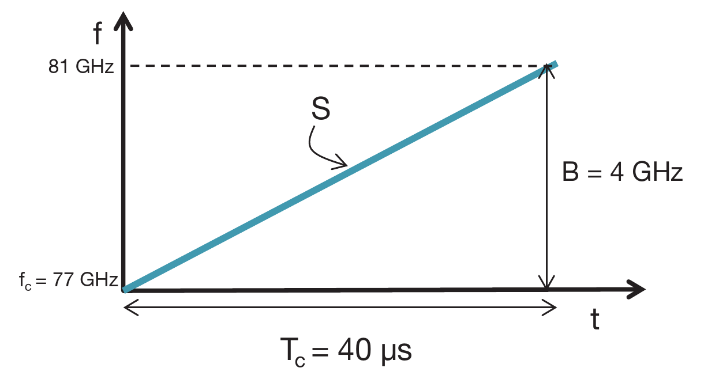
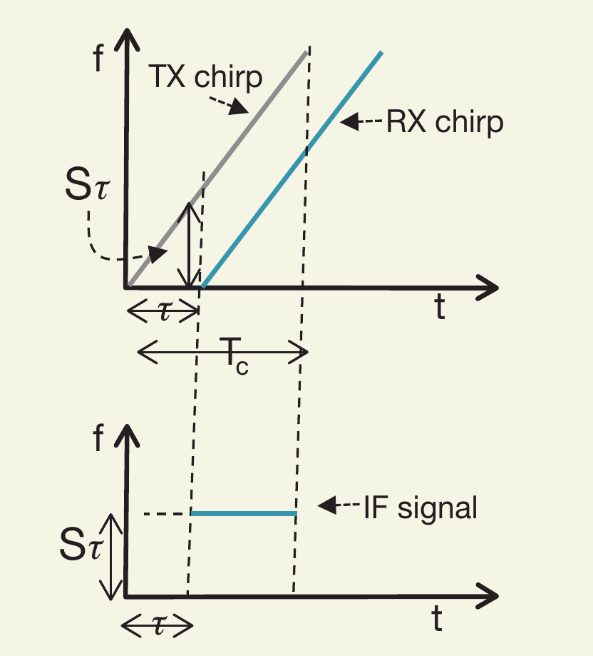
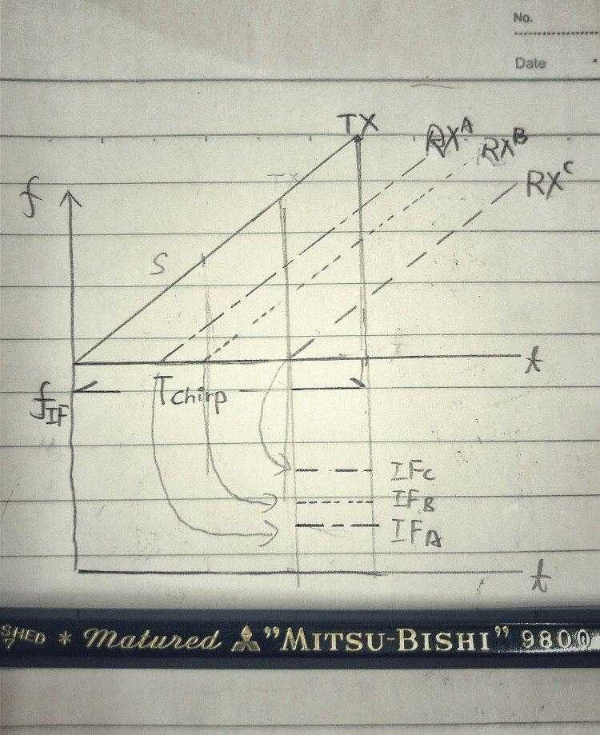

毫米波雷达的基本工作原理
前言
在上一篇中介绍了雷达的基本概念
- 雷达系统发射电磁波信号
- 路径中的物体反射该电磁波
- 雷达系统处理和分析反射波，计算出目标的距离、速度和方位角等信息
本番将从更进一步展开毫米波雷达的工作细节。
再次声明，本人业余电子工程师，雷达更是首次接触，如有理解不当，还请多多指教。
下面进入正文。
不同的雷达使用不同的波段， 波长在1mm 至 100m的广阔频段都可以用于雷达。
既然被称为毫米波雷达，那主要波段就是1mm~10mm之间， 对应于300GHz ~ 30GHz

不过目前因为法规和技术的原因，典型的毫米波雷达频段主要有：
- 24GHz ~12mm
- 60GHz ~5mm
- 77GHz ~4mm (其中77.5—78.0GHz为汽车雷达专用的无线电频段)
下文中，以60GHz/ 77GHz 的雷达为例。
系统框图
正如前文所述的雷达基本系统构成

- synth 合成器，产生调制信号
- TX ant, 发射天线将无线电波送出系统
- RX ant, 接收天线将拾取被目标反射的电波
- mixer, 混频器将接收到的信号和发射信号作为输入，并产生一个中间结果，供后级进一步处理
合成器
雷达的发射信号是经过调制的，调制的手段有很多，这里只说明FMCW（调频连续波）方式。在一个FMCW周期中，是一个频率会随时间线性增加的正弦波信号，一个这样的周期也叫一个啁啾（Chirp）
我plot了一个可能不太标准的Chirp

上图的坐标系是 振幅-时间，
对于同一个啁啾信号，如果改用 频率-时间 坐标系的话，会像下面这个样子

在这幅图中，
- 啁啾的起始频率 $f_c = 77GHz$
- 结束频率$81GHz$， 因此带宽$B = 4GHz$
- 周期$Tc = 40us$， 因此斜率$S = 100MHz/us$
合成器的工作就是周而复始的产生这种Chrip信号。
混频器
混频率是一种非线性电路，它接受两路输入信号，并产生出一路新的信号。
而内部的处理则会根据不同的应用而异。
测距
测距原理
假设$t$时刻的TX信号为（如前文，调制信号为随时间变化的正弦波）：
$y_{tx} = sin(\omega_{tx} t + \phi_{tx})$
而RX信号呢，电波从天线发射，到被目标反射折回，需要一定的时间，因此RX信号，只是被“延时”了TX波形（怀念开发TOF的日子…）：
$y_{rx} = sin(\omega_{rx} t) + \phi_{rx})$
雷达中的混频器的工作就是得到一个新函数：
$y_{if} = sin[(\omega_{tx}-\omega_{rx})t + (\phi_{tx} - \phi_{rx})]$
这个输出也被称为中频(intermediate frequency)。
聪明如我的你应该要发出wow的声音了吧？
这个中频实际包含了RX和TX信号的频差和相位差！
如果还没懂的话，那就看图说话吧。

根据初等物理($时间=\frac{路程}{速度}$）我们知道TX/RX两个信号的延时等于
$\tau = \frac{2*d}{c}$
- $d$ 是目标和雷达之间的距离
- $c$ 是电磁波的速度，也就是光速
需要注意的是，中频信号仅在TX和RX的重叠期有效（因为中频信号由混频器产生）。
而中频信号的起始相位$\boldsymbol{\phi_0}$，就是TX和RX信号在该时刻的相位差。
同时根据上图，也可以得到：
$\phi_0 = 2\pi f_c \tau$ ($f_c \rightarrow $TX啁啾的起始频率)
将$\tau$带入上式，又可以得到：
$\phi = \frac{4\pi d}{\lambda}$
不过这只是一个近似，因为频率在变化，更精确的表述应该是：
$\Delta\phi = 4\pi \Delta\frac{d}{\lambda}$
总结一下，当一个 静态目标出现在在雷达区间内时，IF信号会是一个正弦波：
$IF\rightarrow Asin(2\pi f_0 + \phi_0)$
- $f_0 = \frac{S2d}{c}$
- $\phi_0 = \frac{4\pi d}{\lambda}$
前面强调静态的原因是，如果目标相对雷达有运动，那么会有多普勒效应。不过在快速FMCW系统中，这个效应非常轻微，并且会在后续的信号处理中被修正。
多目标测距
那么如果有多个目标出现在不同的区域呢？
雷达会收到多个啁啾回波。
而每个回波， 回因为远近距离不同，而有不同程度的“延时”。

更远的目标意味着更大的回波延时，也就意味着更大的频差。
那么如何从一个混叠了多个波的信号中，还原出每个信号的调性呢？
傅里叶变换！！
数学家，是一群脑子有病的人。我的脑子也有病，可我数学很渣。。。可见得的不是一种病
测距分辨率
对于电波雷达来说，距离分辨率是衡量其性能的主要指标。当两个物体过于接近时，雷达无法将它们分开。按照上文的分析，这是因为中频区域内有两个过于靠近的横线。
根据傅里叶变换，如果想增加距离分辨率，需要增加中频信号的长度（横着的长度），也就是增加带宽。
同时，观测窗口$T$可以分辨间隔$\frac{1}{THz}$ (1ps)的频率分量。这意味着，只要偏差满足下列关系，就可以被分辨：
$\Delta f > \frac{1}{T_c}$
其中$T_c$是观测时间长度。
而频差 $\Delta f = \frac{S2\Delta d}{c}$， 所以上面的式子整理得到：
$\Delta d > \frac{c}{2ST_c} = \frac{c}{2B}$
通过一顿操作，发现原来距离分辨率仅仅取决于啁啾的带宽！
道理都懂，但是结论怎么如此神奇了？！
对于5GHz啁啾带宽的雷达，距离分辨率就是 大约29.979mm。
下回预告
在毫米波雷达的后续文章中， 将进一步介绍测速、方位测定等原理
to be continued…